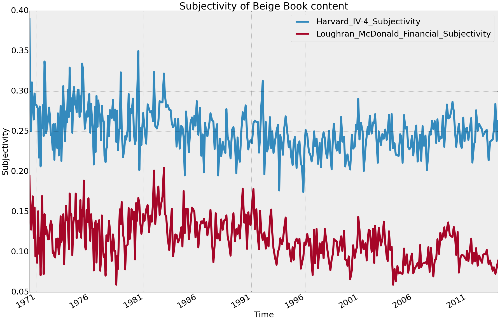
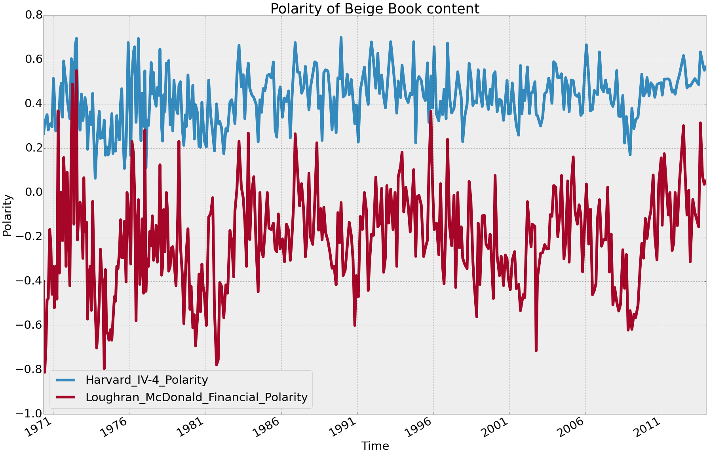
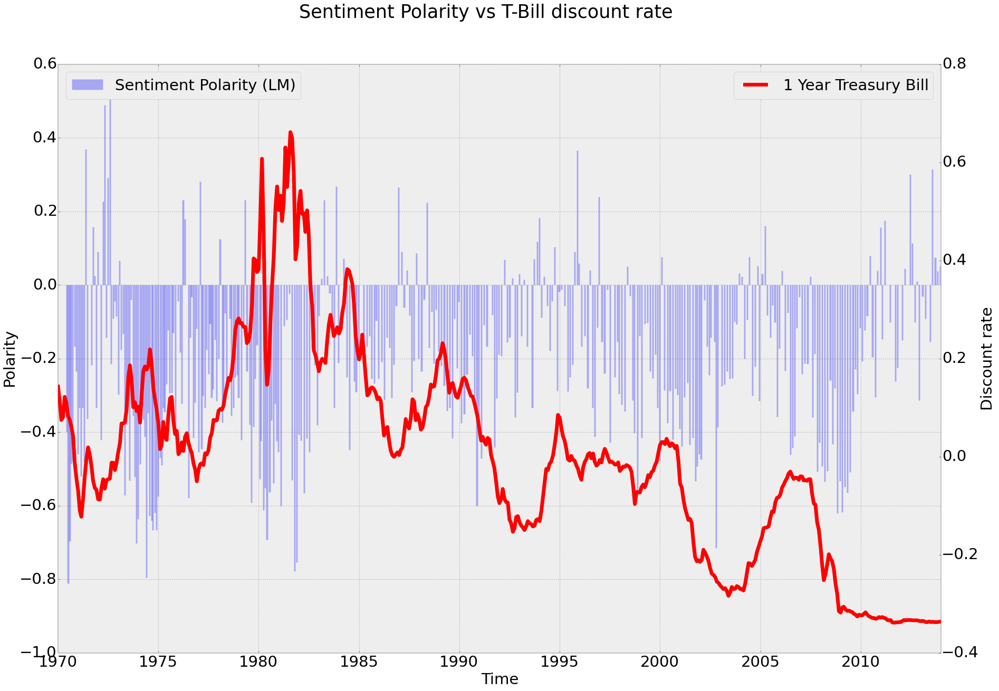

Beige Book Sentiment
Word cloud showing relative frequencies of words in all Beige Books since 1970
Why?
Behavioural finance has provided proof that financial decisions are significantly driven by emotion and mood [1].
Therefore if we can gauge the mood of policy makers, perhaps we can gauge policy decision.
Rochester Cahan, VP of Global Equity Quantitative Strategy at Deutsche Bank, states that the sentiment scores of Thomson Reuters (powered by Lexalytics) are uncorrelated with traditional quantitative signals [2].
Commercial Products and Funds
There are a number of commercial products and funds already providing or exploiting sentiment based signals.
Thompson Reuters recently acquired Lexalytics who provide sentiment indicators in machine readable format. Global sentiment indicators are also provided by MarketPsych, a spin off company from the now closed MarketPsych Captial fund setup by Richard Peterson MD who reported a 28% return from Sept. 2, 2008, through Dec. 31, 2010 while the S&P 500 lost 1.6 percent over the same period.
Cayman Atlantic, aka the “Twitter Hedge Fund” is probably the most high profile use case of sentiment analysis. Founded by Paul Hawtin in 2013 the fund works closely with the team behind the paper Twitter Mood Predicts the Stock Market (pre-print) [3] in order to gauge the entire Twitter verse in terms of 6 different moods: calm, alert, sure, vital, kind, happy. They found that predominately only the calm mood was Granger causative with DJIA.
Sentiment from the Beige Book
- Beige Book content downloaded pro programmatically since 1970.
- Text cleaned and put into common format.
{kind=link}
- Text analysed with Pythons NLTK for sentiment using two dictionaries:
- Harvard IV-4
- Loughran and McDonald Financial Sentiment
Polarity (P) is defined as:
Subjectivity (S) is defined as:
With the Beige Book data set we get the following:
 {kind=link}
{kind=link}
From the above we can see the differences in the two dictionaries used to evaluate Sentiment. The Harvard IV-4 dictionary has no concept of financial lexicon whereas the Loughran and McDonald Financial Sentiment is calibrated from 10-K file date returns, post-file date returns, return volatility, allegations of accounting fraud, and company material weakness disclosures, and as such is more evenly weighted around 0 for Polarity.
Comparing the Loughran and McDonald Financial Sentiment with T-Bill discount rates gives the following:
{kind=link}
By inspection of the above it appears there is some causality/correlation between sentiment of the Beige Book and the T-bill discount rate. Soon i will publish statistical analysis of this causality (Granger or otherwise).
For more info. on this experiment please get in touch, chris.j.morgan@gmail.com.
References
[1] J.R. Nofsinger, Social mood and financial economics, Journal of Behaviour Finance 6 (3) (2005) 144–160.
[2] http://strata.oreilly.com/2011/05/sentiment-analysis-finance.html
[3] Johan Bollen, Huina Mao, Xiao-Jun Zeng: Twitter mood predicts the stock market. J. Comput. Science 2(1): 1-8 (2011)